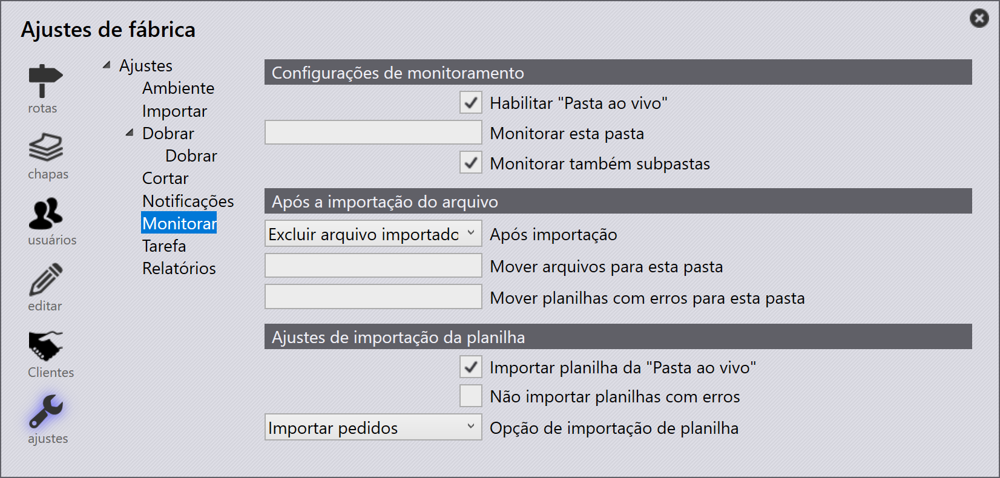

Watch
As configurações de Watch permitem que o TruSmartCAM monitore uma pasta designada e importe automaticamente arquivos para o sistema. Isso ajuda a automatizar a importação de Peças, Jobs, Montagens e Pedidos sem intervenção manual.

Configurações de monitoramento
Habilitar "Pasta ao vivo" - Habilita o monitoramento automático da pasta especificada.
Monitorar esta pasta - Especifica a pasta a ser monitorada para arquivos recebidos.
Monitorar também subpastas - Inclui todas as subpastas no processo de monitoramento.
Após a importação do arquivo
Após importação - Após o arquivo ser importado, o usuário tem duas opções. O arquivo pode ser excluído do local ou movido para um local diferente.
-
Delete imported file - Remove o arquivo de origem após uma importação bem-sucedida.
-
Move imported file - Move o arquivo de origem para a pasta especificada em Move files to this folder após uma importação bem-sucedida.
Mover arquivos para esta pasta - Especifica a pasta de destino para onde os arquivos importados com sucesso devem ser movidos quando After import está definido como Move imported file.
Mover planilhas com erros para esta pasta - Move importações com falha para a pasta de erro especificada.
Ajustes de importação da planilha
Importar planilha da "Pasta ao vivo" - Importa automaticamente arquivos de planilha detectados na pasta monitorada.
Não importar planilhas com erros - Impede que arquivos contendo erros de validação sejam importados.
Opção de importação de planilha - Seleciona o tipo de dados a importar no menu suspenso. Os formatos de planilha suportados podem incluir CSV, XLSX ou XML. As opções disponíveis são:
-
Importar tarefas - Importa dados de job da planilha.
-
Importar pedidos - Importa dados de pedido da planilha.
-
Importar conjuntos - Importa dados de montagem da planilha.
-
Importar peças - Importa dados de peça da planilha.
Informações adicionais
|